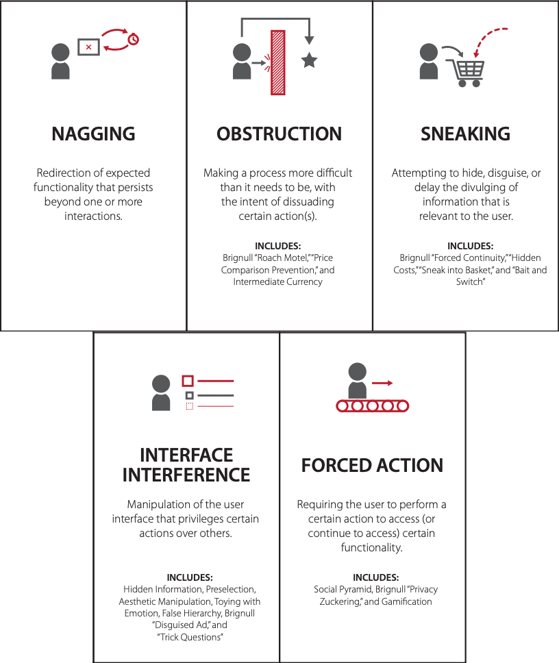

Are binge-watching behaviors a result of human guilty pleasures, or is there more to it? Could the role of UI elements like Autoplay and Recommendations meant to enhance a user experience by providing convenience and ease of use instead become uncontrollable and enforce compulsive watching behaviors?
We hypothesize that there are various problematic design elements on video streaming platforms that indirectly force us to watch more by reducing our user autonomy and sense of self control depending on the level of conscious attention afforded by our active working conscious bodies. Rather than making an active decision to stop watching, we decide to keep watching compulsively as video watching is a low barrier cognitive task, specifically when video watching is done for entertainment purposes.
Summary
The figure on the right depicts dark patterns pointed by Colin Gray [1]. Studies have pointed out dark patterns in user interface that promote addictive behaviors across a range of digital activities like shopping, gaming etc.
We conduct a diary study with 22 viewers over 228 sessions to gain insight into users’ states of mind and to identify users’ emotions while interacting with 4 popular streaming platforms --- Netflix, Prime Video, Disney+ Hotstar and Youtube. We analyze users during two phases --- video selection phase and video completion phase. We analyze these phases at two temporal stages --- at the start of video watching session and at the end of it. We find out meaningful correlations between user mood and contextual behaviors that highlight how particular individual characteristics and viewing situations can lead to negative behaviors. Furthermore, we collect artifacts of problematic UIs and find out the rationale behind the functioning of these UI elements on video streaming platforms, highlighting the psychological tricks that take away user autonomy and sense of self control.
We define and taxonomize 5 dark patterns specifically found on video streaming applications --- Feature Fog, Extreme Countdown, Switchoff Delay, Attention Quicksand and Bias Grind. Our study provides design critique of existing video streaming platforms and points out theoritical design considerations that can help safeguard user interests and enhance their sense of digital wellbeing.
Our study results point out that following dark patterns exist in current video streaming platforms' UI -
.png)
My responsibilities
- I was the team lead and first author for this study.
- After detailed discussions with Dr. Aman Parnami, the project advisor, I designed all the user studies with the help of my team members
- I was responsible for reading prior literature on digital addiction and behavioral psychology.
- I was responsible for giving an ethic-oriented direction to the research work.
- I analyzed the diary study user data and was responsible for highlighting trends in user watching behaviors.
- I was responsible for coming up with 5 convergent dark pattern themes after all the team members together transcribed the interviews and discussed possible terminologies.
I worked on this project with my wonderful and very skilled team members Kyzyl Monteiro (researcher at Weave Lab) and Jaivrat Saroha (intern at Weave Lab). Kyzyl was responsible for designing the diary study and coming up with novel ideas to represent user trends graphically. Jaivrat was responsible for providing assistance on literature review of the work and helping in diary study data analysis. Dr. Angus Forbes and Dr. Aman Parnami were the advisor for the study.
Study Stages
↙
↓
↙
- An initial literature review helped us discover a model of habit formation that contains triggers of negative emotions like boredom, loneliness, etc, that prime a user towards unhealthy video viewing habits.
- Follow-up explanatory surveys helped us discover 2 important factors at play in video watching--- "user habitual behaviors" and "ease of access of content". This confirmed our literature review hypothesis on habit formation.
- We then did an online diary study that led us to discover user pain points, revealing unnecessary and obsessive video watching user behaviors.
- This further led us to analyze user watching behaviors at two temporal stages --- "video slection phase" and "video completion phase", both at the start and end of a viewing session.
- We then collected problematic artifacts on 4 famous video streaming platforms and analyzed them.
- We did user interviews on these artifacts to gather insights on what users felt about the state of these UI elements.
- we finally came up with 4 design suggestions informed by prior psychological theories and HCI work to address the user pain points revealed in ou work. These suggestions led us to an ethical discussion on attention economy and the responsibility of various stakeholders in design.
Literature Review

We wanted to explore the theoritical underpinnings behind the rampant increase in video watching as a digital activity.
We read prior literature in HCI work and behvioral psychology to understand that "habit formation" is a big factor in addictive behaviors.
We discovered a model of habit formation that contains triggers of negative emotions like boredom, loneliness, etc, that have become more common in present times, that might prime a user towards unhealthy video viewing habits.
Exploratory Surveys
We wanted to explore and then narrow down the number of variables available for user behavior exploration on video streaming platform.
To achieve that, we came up with a list of all possible factors from prior litereture that might be responsible for addictive and overwatching behaviors. We performed a correlation analyis test and paired the available factors with user feelings of regret.
This gave us insights on 2 important factors of analysis --- "user habitual behaviors" and "ease of access of content".
The figure below depicts results of Pearson Correlation that we used for finding the correlation between factors. Redder/warmer colors indicate higher correlation, while bluer/cooler are inversely correlated.

Online Diary Study
We wanted to observe and analyze user moods, feelings and state of mind while they interact with video streaming platform UI and watch videos, while preserving the context of usage.
To achieve that, we conducted a diary study with 22 particiapnts over 228 user video watching sessions.
The led us to discovering user pain points and unnecessary and obsessive video watching user behaviors.
We initially thought of using physical probes that users can interact with at fixed times in a day to investigate user behavior and better acknowledge their context (place, time, social setting) for a period of two weeks. However, after discussions among team members, we decided to change this and rather a use a diary study to note user context as we wanted to note the user's state of mind and how they feel right after they finished their viewing session. We used relevant prompts informed from prior literature in the diary to help acknowledge user context, their feelings (satisfaction, regret, or somewhere in between) and state of mind (mindful, mindless, or somewhere in between) right after they finished a viewing session. This was important as right after finishing a viewing session users are still fresh and remember their experience. We used Dual Process Theory literature as our framework to investigate thinking patterns and user perceptions in video watching as it is intended to reveal both conscious (controlled, mindful) and unconscious (automatic, mindless) thinking patterns, as manifested in user viewing behaviors.

To capture user affect, we provide 12 categories of distinct positive and negative emotions in equal numbers that are relevant to video watching as options, following the approach used in the PANAS scale. We also include one neutral emotion so as to span all emotional valences. Motivated by the SAM pictorial scale, we represented each emotion with a different cartoon graphic so that users could quickly make decisions regarding their perceived emotions.


Pain Points in User Viewing Behaviors
After conducting the diary study, we observed that users had distinct behaviors at the start and end of viewing sessions, as well at the start and end of each video.
For that reason, we divided a video watching session into 2 phases --- "start of a video session" and "end of a video session".
This further led us to analyze user watching behaviors at two temporal stages --- "video slection phase" and "video completion phase", both at the start and end of a viewing session.
We define two stages which are important to analyze in a video watching session --- video selection (interaction) phase and the video completion phase.
Video Selection phase -
We refer to video selection phase as the phase where users interact with the UI features of streaming platform to select a video for viewing. We use this for analyzing user state of mind.We observed that as users move from the start of a viewing session towards the end, the percentage of people who view videos mindlessly increases by 24.8% in Autoplay, as compared to the percentage increase in mindless viewing due to Recommendations, which is 3.5%.
''5 seconds left on Autoplay and then you’re like never mind, it has started already. I can’t stop it because once the content starts and I’m about to cancel or exit, it feels like you’re leaving it midway. There’s this strange feeling of missing out on something. It's only later when you have lost a lot of time that you realize that I had no reason to complete the video, maybe other than to watch how the story ends.''
''Secondly, while watching a series, users did not have enough time in the Autoplay timer to pause to reflect and discuss about the recently concluded episode of a story clearly, or to make a conscious decision to stop watching. P8 said, "Watching credits should be default action when one is watching a story. An episode usually finishes at a watershed moment, which requires thinking and discussions with fellow watchers, which are arguably denied by Autoplay after conclusion of an episode. Honestly, this could be avoidable. It ruins the viewing experience.''
The interviews also revealed that most users at the start of the session were not sure of which Recommended video to select. But since Recommendations continuously keeps recommending on the basis of previous watching history after completing each video, people start liking the suggestions as it starts matching their current mood.
''Recommendations are good to get started with. I get to choose the topic of the videos that I have watched currently.''
''As you keep selecting the videos from Recommendations in YouTube, it feels like a rabbit hole, you start disliking the viewing experience. I mean it might be good to have a wider range of recommendations at times, like Netflix does.''
Video Completion phase -
We refer to video completion phase as the phase where users conclude watching a video. We use this for analyzing user feelings. We observed that users who tend to extend their viewing sessions also increase chances of feeling regret at the end of video watching session by 34.02% while using Recommendations. The percentage increase in regret due to Autoplay is 19.8%.The interviews revealed that the reason behind this could be Autoplay's way of working. While users view a series, Autoplay continuously enforces content to users that they like and force them to watch back to back episodes in a season until they finish the entire season off.
Quotes
''It's almost predatory, you can't have any discussions with family or friends, you hardly get any time to interact with the UI in the limited timer, and there you go, another episode starts.''
''Just because the medium is easy to use, and not as hard to get onto as maybe reading a book, its easy to just start watching whatever Recommendation you get. Its the best time pass, but usually I feel like I could have watched something better, or maybe have done something more productive.''
Artifact Analysis
We wanted to trace the pain points of users as pointed out through the results of previous study.
For that reason, we analyzed instances of problematic UI elements on 4 famous video streaming platforms.
This led us eventually to the formulation of dark patterns in the UI of video streaming platforms.
Our team of 4 separately analyzed the individual UI features on each of the 4 streaming platforms available across different devices (laptop/PC, mobile/tablet devices, television). All the researchers presented their findings on each UI element across the 4 platforms - YouTube, Netflix, Disney+ Hotstar and Amazon Prime Video over the 3 types of viewing platforms - mobile/tablet devices, laptop/PC and television, and worked together to identify problematic UI elements.

Finally, every researcher independently confirmed that all formulated categories were appropriate. The goal of this categorization process was to reveal certain situations of use and their consequent effect on a user’s state of mind. For example, ‘extreme countdown’ not only represented the timer in an Autoplay functionality, but also the pressure situation induced by it for the users to make a decision. We arrived at a total of 44 UI artifact instances. These are highlighted in the following figure through the red marked icons.

Formulation of Dark Patterns
We wanted to gather evidence on the problematic nature of the collected artifacts and substantiate it with user insights.
For that reason, we conducted interviews on 44 problematic instances of UI elements found on 4 famous video streaming platforms.
We formulated and taxonomized 5 categories of dark patterns that exist on video streaming platforms.
A dark pattern, coined by Harry Brignull in 2010, is defined as "a user interface that has been carefully crafted to trick users into doing things... they are not mistakes, they are carefully crafted with a solid understanding of human psychology, and do not have the user’s interests in mind". Following in the works of previous activists like Harry Brignull who coined the term dark patterns, we introduced a definition of dark patterns as seen from the perspective of long term behaviour in terms of video watching. We propose that while these features are useful, these features ought to have safeguard measures in long term from a user-centric design philosophy or they should be classified as dark.
After conducting interviews with a mix of randomly chosen self-reported bingers and regular viewers in the following categories: 0-3 hrs (3), 3-5 hrs (4), 5-7 hrs (4), and 7+ hrs (4), we came up with the following 5 dark patterns on video streaming platforms -
| Dark Pattern | Description |
|---|---|
| Feature fog | UI patterns that induce unawareness by reducing autonomy of monitoring user time spent. These UI patterns are designed so that the user less able to get feedback on time spent engaged in a viewing session. |
| Extreme countdown | UI patterns that have a timer and that execute automatically if not interrupted within the short period of time. These patterns induce pressure situations, especially when present socially, to make a decision within the given time. |
| Switchoff delay | UI patterns that promote strategies of hiding restrictive usage features in the default UI. Such options prevent people from breaking mindless extended viewing patterns instantly. |
| Attention quicksand | UI patterns that instantly start without conscious user action. They instantly grab user attention and divert them from what could otherwise be a different online behavior. |
| Bias grind | UI patterns that disproportionately overload user interests and biases. Infinitely long scroll of Recommendations based on previous watching history, provide a choice overload, which is a phenomenon of presenting too many choices to users. |
UI Proposals for Making Ethical Design
Following the discovery of dark patterns, we didn't want to just critique but go one step further in our study and provide suggestions that could improve the current state of video streaming platforms' UI.
For that reason, we came up with 4 design suggestions informed by prior psychological theories and HCI work to address the user pain points present due to the use of dark patterns in UI.
These suggestions paved the way for leading an ethical discussion highlighting the dire state of attention economy and the responsibility of various stakeholders in a digital-wellbeing-oriented sustainable user design.
| Design | Description |
|---|---|
| Autoplay nudges | Design safeguards like nudges (Cox et al, 2016) could be particularly useful in prompting a user to make a conscious interaction before continuing to watch more videos. |
| Conscious default UI interaction | The default option could be changed from 'Play Next' to `Skip Credits' and then require a conscious interaction in order to begin playing the next episode of the series. |
| Varied recommendations | By effectively categorizing personalized recommendations, platforms can help the user in making a decision resulting in well informed and better utilization of their engagement times with the platform. |
| Alternative recommendation nudges | Design safeguards that timely refresh Recommendations randomly and provide nudges for introducing something new after a particular threshold of Recommendations might be helpful to break out of the set list of options that users are engaged in. |
References -
[1] Gray, Colin M., et al. "The dark (patterns) side of UX design." Proceedings of the 2018 CHI conference on human factors in computing systems. 2018.